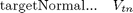
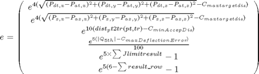

classunk_posesel
Description: based on streamOnto - specially made for blasting given a start q it will try and plast a point pt in space within an angle to the normal to the plane. It will try and minimise the distance between where the blast hits the plane and the center of the given plane. It may use various start positions if not using quick version Returns the joint coordinates corresponding to the end-effector at pt Note that the inverse kinematic solution is generally not unique, and depends on the initial guess Q (which defaults to 0). Also returns whether solution is valid and which method used and the dist_val to the required tr
Contents
- Function Call
- Variables
- %check to see we are not starting parallel with plane normal
- Do the least squared optimisation function using q passed in
- Check the optimisation results, change start to all Zeros if necessary
- EMBEDDED FUNCTION: Run iteratively changing delta q (dq)
- Error Vector (being minimised) in embedded cost calc function
- FUNCTION: checks pose validity, if valid but dist>min, return distance
Function Call
Inputs:
pt (1*3 double) cartitian point where we want end effector br
targetNormal (1*3 double) the desired target normal at the point
q (1*6 double) radians - The joint config starting guess
Returns:
qt (1*6 double) radians - The recommended joint config
solutionvalid (binary) whether the returned qt gives a valid solution within optimisation parameters
dist_val (double) Distance between where the plane is hit with blast stream and pt
targetdist (structure) 2 values, (1)Distance between end effector and plane, (2) Distance between end effector (nozzel) and pt
function [qt,solutionvalid,dist_val,targetdist] = classunk_posesel(pt, plane_equ, q)
Variables

global classunkn_optimise densoobj workspace r; %default is true, unless proven otherwise solutionvalid=true; %display on displayon=true; maxdistguess=6; if size(pt, 1) == 1 pt = pt(:); % make sure pt is a column vector end %need to normalise plane equation (should be already) plane_equ(1:3)=plane_equ(1:3)/norm(plane_equ(1:3)); numlinks = r.n; Links = r.link; t = r.base; qlimits=r.qlim; %make sure the q is correct if nargin < 3 q = zeros(numlinks, 1); else q = q(:); end
%check to see we are not starting parallel with plane normal
%a temp variable to hold the joint fix newQ=q; [valid,dist_val,targetdist(1).val,theta,correctway]=classunkcheck_newQ(newQ,qlimits,pt,t,Links,numlinks,plane_equ); if dist_val>maxdistguess if newQ(5)>0; newQ(5)=q(5)-pi/2; else newQ(5)=q(5)+pi/2; end if displayon; display('changing joint 5 only');end [valid,dist_val,targetdist(1).val,theta,correctway]=classunkcheck_newQ(newQ,qlimits,pt,t,Links,numlinks,plane_equ); if dist_val>maxdistguess newQ=q; if newQ(4)>0; newQ(4)=q(4)-pi/2; else newQ(4)=q(4)+pi/2; end if displayon; display('changing joint 4 only');end [valid,dist_val,targetdist(1).val,theta,correctway]=classunkcheck_newQ(newQ,qlimits,pt,t,Links,numlinks,plane_equ); if dist_val>maxdistguess newQ=q; if newQ(4)>0; newQ(4)=newQ(4)-pi/2; else newQ(4)=newQ(4)+pi/2; end if newQ(5)>0; newQ(5)=newQ(5)-pi/2; else newQ(5)=newQ(5)+pi/2; end if displayon; display('changing joint 4 and 5');end [valid,dist_val,targetdist(1).val,theta,correctway]=classunkcheck_newQ(newQ,qlimits,pt,t,Links,numlinks,plane_equ); if dist_val>maxdistguess if displayon; display('Still not good enough even after different starts of 4 and 5');end %probably could make a better guess end else if displayon; display('close enough without moving 4 and 5 together');end end else if displayon; display('close enough without moving 4');end end else if displayon; display('close enough without moving 4 or 5');end end %if we are aligned ok but we are around the opposite way then fix this if ~correctway if newQ(4)>0; newQ(4)=newQ(4)-pi; else newQ(4)=newQ(4)+pi; end if displayon; display('Switching directing by changing joint 4 only'); end end q=newQ;
Do the least squared optimisation function using q passed in
options = optimset('Display', 'off', 'Largescale', 'off', 'TolFun', classunkn_optimise.stol,'MaxFunEvals', classunkn_optimise.iLimit); xGuess = zeros([size(q,1)-1,size(q,2)]);lb = []; ub = []; [dq] = lsqnonlin(@costComponents, xGuess, lb, ub, options); % Update the configuration qt = [q(1:5) + real(dq(1:5));q(6)]; %if there is a collision or out of joint limit then no distance is returned dist_val=inf;
Check the optimisation results, change start to all Zeros if necessary
try [solutionvalid,dist_val,targetdist.val]=classunkcheck_newQ(qt,qlimits,pt,t,Links,numlinks,plane_equ); catch; keyboard; end
EMBEDDED FUNCTION: Run iteratively changing delta q (dq)
function [e]=costComponents(dq) tr=t; if ~isempty(find(isnan(dq(1:5))==1,1)) error('Nan found'); end q_temp=[q(1:5)+real(dq(1:5));q(6)]; result_row=[1,1,1,1,1,1]; %check each joint and link for collisions and exceeding limits for i=1:numlinks; tr = tr * Links{i}(q_temp(i)); if i>2 tempresult=check_FF(tr,densoobj(i+1).ellipse,workspace.indexedobsticles); result_row(i)=tempresult; end end
Error Vector (being minimised) in embedded cost calc function

% Distance from pt aimed at to end effector streamlength=dist_pt2tr(pt,tr); %Angle between ray and plane theta = acos(plane_equ(1:3)*unit(tr(1:3,3))); theta(theta>pi/2)=pi-theta(theta>pi/2); % streamStart=tr(1:3,4); streamEnd=tr(1:3,4)'+tr(1:3,3)'; streamEndOp=tr(1:3,4)'-tr(1:3,3)'; % r_var=[streamStart(1)-streamEnd(1),streamStart(2)-streamEnd(2),streamStart(3)-streamEnd(3)]; r_var=-tr(1:3,3)'; %find intersection point between surface and the scan line between scan origin and point bottomof_t_var=plane_equ(1)*r_var(1)+... plane_equ(2)*r_var(2)+... plane_equ(3)*r_var(3); %make sure it is not 0 otherwise change it so it is simply a very small %number (epsilon) if ~isempty(find(bottomof_t_var==0, 1)); bottomof_t_var(bottomof_t_var==0)=eps; end t_var=( plane_equ(1)*tr(1,4)+... plane_equ(2)*tr(2,4)+... plane_equ(3)*tr(3,4)+... plane_equ(4)... )./ bottomof_t_var; % Get the intersection points intersectionPNT=[t_var.*-r_var(1)+tr(1,4),... t_var.*-r_var(2)+tr(2,4),... t_var.*-r_var(3)+tr(3,4)]; e = [exp(-5*(classunkn_optimise.maxSurfToEF-streamlength)); exp(-5*(streamlength-classunkn_optimise.minSurfToEF)); exp(2*(sqrt((pt(1)-intersectionPNT(1))^2+... (pt(2)-intersectionPNT(2))^2+... (pt(3)-intersectionPNT(3))^2)-classunkn_optimise.distAwayfromTarget)); exp(2*(((intersectionPNT(1)-streamEnd(1))^2+... (intersectionPNT(2)-streamEnd(2))^2+... (intersectionPNT(3)-streamEnd(3))^2)-... ((intersectionPNT(1)-streamEndOp(1))^2+... (intersectionPNT(2)-streamEndOp(2))^2+... (intersectionPNT(3)-streamEndOp(3))^2))); exp(5*(theta-classunkn_optimise.maxAngle*pi/180)); exp(q_temp(1)-qlimits(1,2))+exp(qlimits(1,1)-q_temp(1)); exp(q_temp(2)-qlimits(2,2))+exp(qlimits(2,1)-q_temp(2)); exp(q_temp(3)-qlimits(3,2))+exp(qlimits(3,1)-q_temp(3)); exp(q_temp(4)-qlimits(4,2))+exp(qlimits(4,1)-q_temp(4)); exp(2*(q_temp(5)-qlimits(5,2)))+exp(2*(qlimits(5,1)-q_temp(5))); exp(5*(6-sum(result_row)))-1]; end end
FUNCTION: checks pose validity, if valid but dist>min, return distance
function [valid,dist,targetdist,theta,correctway]=classunkcheck_newQ(qt,qlimits,pt,tr,Links,numlinks,plane_equ) global classunkn_optimise densoobj workspace; %returns infinite distance by default dist=inf; correctway=true; basetr=tr; %distance from tr to target pt, distance from tr to target plane targetdist=[inf,inf]; %it is not valid by default so we can return at anytime and return invalid valid=false; %from base transform of the robot check each joint and fkine through for i=1:numlinks; tr = tr * Links{i}(qt(i)); if qt(i)<qlimits(i,1) || qt(i)>qlimits(i,2); return; end; if ~check_FF(tr,densoobj(i+1).ellipse,workspace.indexedobsticles); return; end; end % Check the actual distance from end effector to target point targetdist(1)=dist_pt2tr(pt,tr); %the end stream and the end stream in opposite direction streamEnd=tr(1:3,4)'+tr(1:3,3)'; streamEndOp=tr(1:3,4)'-tr(1:3,3)'; r_var=-tr(1:3,3); %find intersection point between surface and the scan line between scan origin and point bottomof_t_var=plane_equ(1)*r_var(1)+... plane_equ(2)*r_var(2)+... plane_equ(3)*r_var(3); %make sure it is not 0 otherwise change it so it is simply a very small %number (epsilon) if ~isempty(find(bottomof_t_var==0, 1)); bottomof_t_var(bottomof_t_var==0)=eps; end t_var=( plane_equ(1)*tr(1,4)+... plane_equ(2)*tr(2,4)+... plane_equ(3)*tr(3,4)+... plane_equ(4)... )./ bottomof_t_var; % Get the intersection points intersectionPNT=[t_var.*-r_var(1)+tr(1,4),... t_var.*-r_var(2)+tr(2,4),... t_var.*-r_var(3)+tr(3,4)]; targetdist(2)=dist_pt2tr(intersectionPNT,tr); %the distance on the plane between where we aimed and where it hit is dist=sqrt((pt(1)-intersectionPNT(1))^2+... (pt(2)-intersectionPNT(2))^2+... (pt(3)-intersectionPNT(3))^2); %angle between line (lots of possibilities) and plane theta=[]; for angs=-pi/2:10*pi/180:pi/2 tr=basetr; for i=1:numlinks; if i==5 tr = tr * Links{i}(angs); else tr = tr * Links{i}(qt(i)); end end theta = [theta;acos(plane_equ(1:3)*unit(tr(1:3,3)))]; end theta(theta>pi/2)=pi-theta(theta>pi/2); %if it is allowable then it is valid and change this to return % note the angle test MUST be first since it checks that it is facing % correct way if (intersectionPNT(1)-streamEnd(1))^2+(intersectionPNT(2)-streamEnd(2))^2+(intersectionPNT(3)-streamEnd(3))^2>(intersectionPNT(1)-streamEndOp(1))^2+(intersectionPNT(2)-streamEndOp(2))^2+(intersectionPNT(3)-streamEndOp(3))^2 display('Stream is facing the wrong way'); correctway=false; valid=false; elseif targetdist(1)<classunkn_optimise.minSurfToEF display('End Effector is TOO CLOSE to aimed at point'); valid=false; elseif targetdist(1)>classunkn_optimise.maxSurfToEF display('End Effector is TOO FAR AWAY from aimed at point'); valid=false; elseif dist>classunkn_optimise.distAwayfromTarget display('The actual INTERSECTION point shot is TOO FAR AWAY from aimed at point'); valid=false; elseif isempty(find(theta<classunkn_optimise.maxAngle,1)) display('The angle to the surface is too great'); valid=false; else %if we get to here it is valid valid=true; % display('Found a solution'); end; end